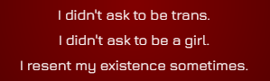

The Task
Task #0
Find My Name
Who are you?
You know a little better the answer to that question now.
But what's your name?
I had decided to do 100 Things! I was making a website! I was finally filled with a real motivation to live and thrive like I hadn't in a long while!
And then...


I was finally realising that identity is not something you invent. It's something you discover.
Who am I? Why am I? Turns out the details don't actually matter.
I'm here. I'm me. And even though it feels as though the world constantly demands it of me, I need no justifications or explanations for how I feel I am and choose to behave.
You don't need a story of yourself to exist. And you don't need an explanation of yourself to feel as yourself.
And so after a couple days of crashing out (and an hypnosis session guided by Tina), I came to more intimately know myself.
I've always been that nameless girl inside of me.
The girl that Tina wrote her poem to. The girl I never liked directly identifying with the various personas I had worn and created for myself over the years.
Because I didn't create that girl.
I am her.
Who are you?
You know a little better the answer to that question now.
But what's your name?
What's my name?
I didn't choose to be me.
And for most of my life I didn't even get to live in a form that suited me.
That girl inside me was always chained up in her unwanted body, trying her best to make do with the physical form the world gave her in spite of the fact that she desperately wanted to be seen.
She was there the whole time! I was her the whole time!
But nobody got to see her! Not the way she deserved to be seen!
If only I had been born biofemale...
If I had...
If I had taken on the form that I deserved. The form that reflects my truth...
My mom would've given me a different name.
The name of the girl that I could've been. And yet... the girl that I already was. My name.
Charlotte-Marie.
And so as I explained to Jack, in summary:
I have historically engaged with identity primarily as an excercise of invention ever since transitioning.
But recently Ive started to like. Question that perspective.
This is partially because Ive realised I actually resent the shape I take to some extent. Turns out I dont actually like being a girl for a lot of reasons. And I dont like being trans for a lot of reasons.
But if you see identity as something purely constructed then the rational question I end up asking myself from that is like. ...then why are you still identifying as a girl then?
And the answer becomes intuitively obvious at that point, its because I am one, idiot.
Idfk know why Im a girl, and I kinda hate that I am one sometimes, but also this is who I am and theres not much to be done about it.
And so at this point my identity becomes less a radical reinvention of myself under my control, and more of a reflection of a reality of myself that I cannot control or decide.
And thats okay. I actually do overall still rather like being me. I dont actually resent being myself (a transgirl) as much as I resent the context of my reality making that experience unneccesearily miserable and contentious.
But the engagement with my sense of self has changed from this understanding and I wish to acknowledge that I am and always have been the up until now nameless girl inside of me that was forced to do what she could with the inappropriate form she was given.
And Melody was less me giving a name to that girl, to myself, and more coming up with a suitable form to step into and become.
Which... it wasnt bad, I certainly did a decent job of picking a name and form that is more suitable for me than what I had before.
...but Im more aware of myself, the girl who Ive always been, and it just doesnt feel appropriate anymore for me to be trying to be an invented me rather than like, the real me.
And so what better name to give the girl Ive been all along then the name of the form that the world kept from me. Then the identity that i wouldve been able to more properly discover myself with had I not been born biomale. Its not something im inventing for myself but a reflection of the girl Ive been the whole time.
Anyway, thank you for coming to my TED talk.
And so... Task Complete!